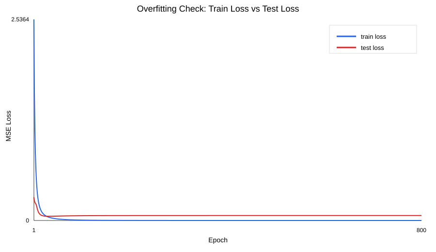
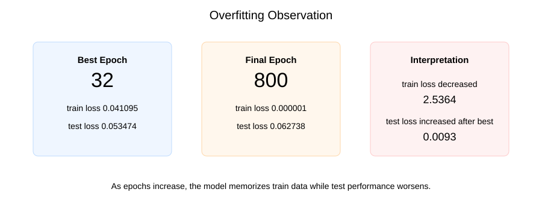
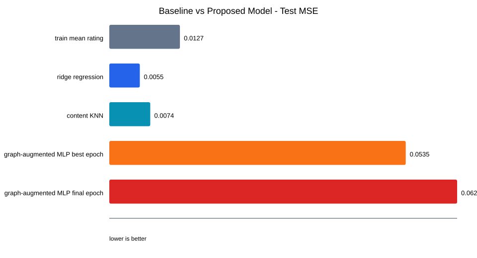

W&B를 직접 사용하지 않고도 발표에 넣을 수 있도록 같은 내용을 로컬 그래프로 정리한 대시보드입니다.



| Model | Test MSE | Test RMSE | Test MAE |
|---|---|---|---|
| Baseline: train mean rating | 0.01273292 | 0.11284025 | 0.09234167 |
| Baseline: ridge regression | 0.00550202 | 0.07417562 | 0.05714681 |
| Baseline: content KNN | 0.00738258 | 0.08592196 | 0.06305195 |
| Proposed: graph-augmented MLP best epoch | 0.05347417 | 0.23124483 | 0.1657416 |
| Proposed: graph-augmented MLP final epoch | 0.06273821 | 0.25047597 | 0.17400972 |